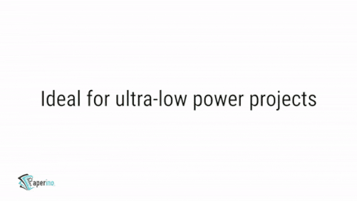
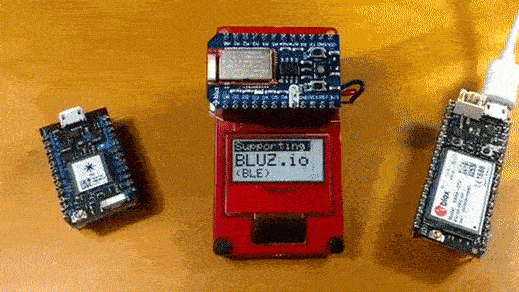
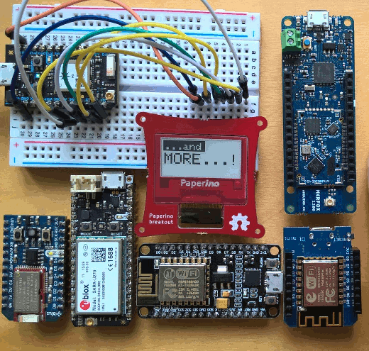
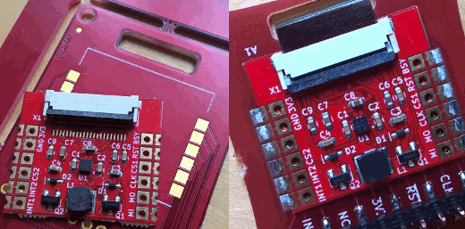

So, what is Paperino?
Modern ePaper displays (EPDs) combine cutting edge technology with the known, century-old experience of paper. They can display text and graphics without any power, which makes them ideal for ultra-low power and battery driven projects. However, integrating an ePaper display into your project can be complex due to the need for several high voltages and waveforms. Paperino simplifies driving ePaper displays with clean, simple, and short script examples. This lets makers of all ages - from kids learning Arduino, to engineers and developers building with Particle, use ePapers for their next project!

Particle Shield (PnP)
The ePaper display shield for the Particle MCU family allows you to start playing within minutes without the need of manual wiring. It supports Particle Photon, Electron and Bluz.io. The shield can be combined with other Particle shields like the battery shield for example. If you want to know how to connect the shield with your Particle device then please continue reading the Hookup guide here.

Breakout Board
Further Arduino-compatible microcontroller can be hooked-up with the universal ePaper breakout-board. So far it was tested with NodeMCU, WeMos D2 mini and the new Arduino MKRFOX1200. Generally it should work with all Arduino-compatible MCUs having at least 4kb SRAM, 3.3V pinouts and sufficiently free GPIOs!

Driver Module
The driver module is the heart of Paperino and contains the electronics to drive the ePaper display. The module can be incorporated to your own PCB designs. Soldering skills are of course needed!
